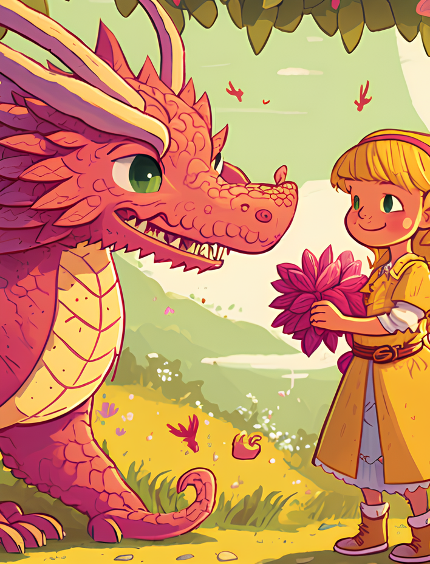

Сказка «О розовом динозаврике и девочке Маше»
Наталья Юркойть
На одной волшебной полянке, где всегда тепло, где воздух наполнен разноцветными бабочками, а под ногами растут яркие цветы, жил-был розовый динозаврик по имени Коля. Это был сказочный динозаврик, случайно выпрыгнувший из одной детской книжки и поселившийся на чудесной поляне.
Просыпаясь рано утром, он, первым делом, сладко потягивался и зевал, потом вдыхал аромат цветов, служивших ему постелью, звучно чихал от попадавшей в нос пыльцы и поднимался на горку, чтобы увидеть, как поднимается солнышко.
И как только первые лучики показывались из-под земли (так думал динозаврик), Коля радостно подпрыгивал и кричал:
-Здравствуй, солнышко, доброе утро! А я снова раньше тебя проснулся!
Солнышко ласково улыбалось и обнимало своим теплом маленького друга. Вокруг тут же пробуждались бабочки и пчёлки и принимались за свои дела. Один Коля слонялся без дела. Он прыгал на полянке, грелся на солнышке, купался в озере и мечтал, глядя на плывущие по небу облака.
Динозаврик очень хотел найти себе друга. Он бы всё-всё для него сделал. Но на его полянку никто не заходил.
Вдруг ему на нос села бабочка.
-Бабочка, а давай с тобой дружить,- закричал, обрадовавшись Коля.
Но бабочка отчего-то быстро вспорхнула и улетела.
Затем он увидел муравья, несущего соломинку.
-Привет, муравейчик, куда ты это несёшь?
Но муравей не обратил на динозаврика внимания.
На берегу заквакала лягушка, раздуваясь, как зелёный воздушный шарик.
-Ой, лягушка, а ты будешь мне подружкой?- снова попытался познакомиться динозаврик.
Но квакушка лишь ухмыльнулась в ответ и прыгнула в воду.
-Эхе-хе, - вздохнул Коля,- почему же со мной никто не дружит? Одно только солнышко любит меня и всегда выходит ко мне утром. Но с ним не побегать и не поговорить, не искупаться в озере…
Как будто в ответ на его причитания совсем недалеко послышался чей-то плач.
-Кто тут плачет?- спросил он у куста, из которого доносились звуки.
-Это я-а-а-а-а, - ответил куст.
-А ты разве умеешь разговаривать? И плакать…. Никогда не видел таких растений, - удивился динозаврик, подходя к кусту ближе и оглядывая его.
-Вовсе никакое я не растение, я – Маша, - ответила маленькая девочка, выглянувшая из-за куста.
Она была одета в ярко-розовое платье, на голове её красовались огромные красные банты в чёрный горох, которые напоминали божьих коровок. В одной руке она держала куклу, другой рукой вытирала слёзы.
Впервые увидев сказочного динозаврика, да ещё такого же цвета, как её любимое платье, Маша перестала плакать и улыбнулась:
-А ты забавный, и совсем не злой. Как тебя зовут?
-Коля. А ты почему плачешь, Машенька? Разве у тебя тоже нет друзей?
-Я плачу, потому что заблудилась. Я хочу домой, к маме…- Маша, вспомнив о своём горе, снова захлюпала носом.
- Не плачь, мы обязательно найдём твой дом. А кто это «мама»? Такое красивое имя, наверное, она очень добрая твоя подружка? Жаль, у меня нет мамы.
- Да нет, же, мама - это мама, она очень-очень добрая и родная, она всегда со мной, я не могу без неё…- попыталась объяснить девочка, и Коля понял, что мама – это то, без чего совсем невозможно прожить…
-А как мы найдём мой дом? – недоверчиво спросила Маша.
-Вон видишь гору? Я на ней солнышко встречаю. С неё всё-всё видно, и дом твой увидим. Пойдём?
Коля взял девочку за руку, и они пошли взбираться на гору. Осмотревшись вокруг, они увидели вдалеке невысокий домик с зелёной крышей.
-Вон, вон мой дом, там мама, побежали скорее, - обрадовалась Маша, и они чуть не кубарем покатились с горы.
Они прошли через полянку, потом через берёзовую рощу, затем динозаврик перевёз девочку на спинке через ручей.
Всю дорогу они разговаривали и смеялись. Когда подошли к дому, Машеньке даже не захотелось расставаться с динозавриком.
-Теперь ты – мой лучший друг, - сказала девочка, - спасибо тебе.
-Правда? Ты сказала, друг? Я правильно понял? Мы с тобой друзья? Я друг, я друг!- запрыгал от восторга динозаврик.
-А давай завтра поиграем вместе, - предложила Маша, - я познакомлю тебя со своими куклами…
-А можно? Я очень буду рад. Завтра встречу солнышко и сразу приду к ручью. Приходи туда же. А ты правда будешь со мной играть? – засомневался Коля.
-Конечно, ты ведь такой добрый и хороший, и мой друг. До завтра?
-До завтра, - сказал динозаврик и счастливый побежал на свою полянку, которую считал своим домом.
По пути он размышлял о том, как это здорово, что можно с кем-то дружить.
Он хотел быстрее лечь спать, чтобы скорее наступило утро.
С тех пор динозаврик уже не был одиноким, у него была Маша. Друзья каждый день вместе играли, бегали, купались. Коля приносил Маше охапку цветов со своей поляны, а Маша угощала его вкусными яблоками из своего сада. Она научила динозаврика прыгать через скакалку, подкидывать высоко мячик, пускать мыльные пузыри, играть в дочки-матери. Никогда ещё динозаврику не было так весело. Он, в свою очередь, научил Машеньку гоняться за бабочками, наблюдать за облаками и складывать красивые букеты.
Так незаметно прошло лето, наступила осень. Трава загрустила и стала уныло гнуться к земле. Листья на деревьях, опечаленные тем, что солнышко не так ярко уже для них светит, сами стали желтеть, чтобы хоть чем-то походить на солнышко. А когда же стало холодать, они совсем осыпались, чтобы скрыться от ветра под обещавшим вскоре выпасть снегом.
Только на поляне динозаврика всё ещё росли прекрасные цветы и летали бабочки, это ведь была волшебная поляна. И сам динозаврик был волшебным, его могли видеть только дети, добрые и послушные, какой была Маша.
Её мама всегда удивлялась, откуда её дочь берёт такие необычайно красивые цветы даже осенью.
Итак, друзья виделись каждый день, но однажды Коля не дождался девочку. Он прождал целый день и стал беспокоиться: никогда ещё Маша не пропускала их игр. На другой день он снова прождал её напрасно.
Когда стало темнеть, и Коля убедился, что подруга его не придёт, он решил сходить к ней и разузнать всё. Никогда ещё раньше он не ходил дальше ручья, но сегодня это нужно было сделать. Он быстро пробежал через сад, пролез через щель в заборе и оказался во дворе. Собака не залаяла на него, она лишь радостно завиляла хвостом и взвизгнула, как бы здороваясь. Динозаврик прошмыгнул в приоткрытую дверь, прошёл через пустой зал и очутился в Машиной комнате. Это он понял по игрушкам, которые были повсюду.
Здесь были знакомые куклы Катя и Даша, ведёрко с лопатками, самолётик, цветной мяч и много плюшевых медвежат, зайчиков, даже большой серо-голубой слон, очень похожий на настоящего.
Коля осмотрелся и увидел лежащую на постели Машеньку. Её бледный вид и тяжёлое дыхание говорили о том, что девочка больна. Динозаврик только понаслышке знал, что значит болеть, но понимал, что это очень плохо.
-Машенька, - прошептал он, подходя ближе,- как ты?
-Ой, Коля, ты пришёл? Я не смогла сегодня встать с постели, у меня температура, мне нельзя выходить из дома,- ответила она, обрадовавшись появлению друга.
Из соседней комнаты выглянула мама, чтобы посмотреть, с кем разговаривает её дочь. Никого не увидев, она решила, что Маша бредит, и со вздохом пошла разводить лекарство.
-Чем я могу помочь тебе?- спросил динозаврик.- Как же тебя вылечить?
-Не знаю, мама поит меня чаем с ромашкой и каким-то лекарством, но оно пока не помогает. А сегодня я видела чудесный сон. Ко мне прилетела добрая фея и сказала, что исцелить меня можно только соком волшебной ягоды, которая растёт в далёкой сказочной стране. Я никогда не видела такой ягоды и не слышала о такой стране. Это всего лишь сон…
-А я верю в сны, расскажи мне подробнее, Машенька,- попросил Коля.
-Хорошо, если тебе интересно, расскажу то, о чём мне поведала фея. Эта страна называется Медовия, в ней много пчёл. Там растут огромные цветы, в которых живут маленькие человечки. Они летают на пчёлках, как на самолётиках и очень любят мёд с лимоном и ягоду медовницу. Эти человечки выращивают кустики с ягодами в цветочных горшочках, поливая их свежим мёдом. А горшочки они держат прямо внутри бутонов своих огромных цветов-домиков. Медовница излечивает от всех болезней, поэтому человечки никогда не болеют. Это всё мне рассказала добрая фея. А потом я проснулась…
-Я обязательно найду эту волшебную страну и принесу тебе такую ягоду, чего бы это мне ни стоило. Ты выздоровеешь, и мы снова будем играть вместе, - пообещал динозаврик.
-Но это только сон…
-Отдыхай и жди меня,- Коля поцеловал Машеньку и отправился домой, потому что уже совсем стемнело.
Придя на свою полянку, он долго не мог уснуть, всё ворочался и глядел на звёзды. Когда он увидел падающую звезду, он загадал желание:
-Пусть мне сегодня приснится дорога в волшебную страну Медовию.
Ещё немного поворочавшись, Коля задремал. Во сне он увидел, как пчёлки с его полянки кружат над цветами, собирают мёд, и куда-то с ним улетают. Динозаврик решил проследить за ними и увидел, что слетаются они к старому дубу, потом куда-то исчезают. Обойдя вокруг дерева, Коля увидел дупло, в которое влетают пчёлы. Он попытался влезть в него, но упал и больно ударился. Проснулся он от своего же крика…
-Спасибо, звёздочка, что исполнила моё желание! И как я сам не догадался проследить за пчёлами? Конечно же! Они из волшебной страны, потому что летают круглый год, а обыкновенные пчёлы зимой спят!
Динозаврик вскочил со своей постельки и кинулся искать старый дуб, который видел во сне.
Солнышко, не увидев Колю на горе, очень удивилось и даже спряталось за тучку. Первый раз розовый динозаврик не поприветствовал небесное светило. Он спешил на поиски страны Медовии.
Заметив, в какую сторону направляются пчёлы, Коля последовал за ними и вскоре увидел дуб с большим дуплом.
Не мешкая ни минуты, динозаврик стал карабкаться на дерево.
Он поступил умнее, чем во сне: чтобы не свалиться, подкатил к дереву большой камень, взобрался на него и без труда заглянул внутрь.
Там было темно, но далеко внизу светился маленький огонёк, будто звавший в неведомый мир. Динозаврик наклонился сильнее, чтобы разглядеть светящееся пятнышко, но не удержался и свалился в дупло. Летел он недолго, упал на что-то мягкое, похожее на мох.
Коля встал и огляделся по сторонам. Всё вокруг было таким, как описала Маша. Сомнений не оставалось - динозаврик попал в страну Медовию.
Воздух здесь был наполнен ароматом мёда, всюду росли огромные, размером с него, красные, жёлтые и оранжевые цветы.
Коле захотелось понюхать один, он наклонился и потянул носом воздух.
-Эй ты, громила, осторожней! – услышал вдруг он возле самого уха.
-Простите, я не увидел Вас, - извинился динозаврик, разглядев на цветке гномика в жёлтом колпаке.
-Смотри внимательнее, а то раздавишь кого-нибудь, - проворчал гномик, усаживаясь на пчелу.
Динозаврик хотел спросить его про лечебную ягоду, но гномик уже улетел.
Коля стал подходить к другим цветкам и заглядывать в них, надеясь найти там горшочки с кустиками ягод или других человечков. Но ягод в цветах не было, а гномики при виде незнакомца сразу же улетали. Цветов вокруг было много, все Коле не проверить, проживи он здесь хоть целый месяц!
А ему нельзя было медлить, Машенька болела…
Присел он на траву и глубоко вздохнул.
Вдруг где-то совсем близко послышался жалобный писк, похожий на комариный. Прислушавшись, Коля понял, что это был крик о помощи. Посмотрев по сторонам, динозаврик увидел большую паутину, из которой тщетно пытался вырваться малыш. Видимо, он зазевался и угодил в ловушку вместе со своей пчелой. Теперь к ним подбирался паук.
Коля быстро выхватил из паутины малыша и освободил пчелу, оставив паука без обеда.
-Ну, малыш, будь впредь внимательнее. С пауком шутки плохи,- сказал он, посадив гномика на лепесток цветка.
Малыш засмеялся тоненьким голосочком, похожим на звон колокольчика и ответил:
-Ты говоришь как моя мама. Она всегда твердит мне то же самое, а я вот попался-таки… Если бы не ты, слопал меня сейчас бы паук… Меня Пупс зовут. А тебя как?
- Я Коля, очень рад, что мы с тобой познакомились. Мне нужна твоя помощь, Пупс. Одна очень хорошая девочка, её зовут Маша, заболела. Чтобы её вылечить, нужна ваша ягода медовница. Сам я не смогу найти, а твои сородичи не хотят со мной даже разговаривать. Ты поможешь мне?
-Конечно, помогу. Это же очень просто. Смотри: цветы на этой поляне - с открытыми бутонами, на другой - с закрытыми, в них-то мы и выращиваем медовницу. Ягода не любит солнечного света, она растёт, поглощая лунное сияние. А те цветы называются ночными фиалками, днём они спят, закрывая бутоны, ночью распускаются и благоухают. Ночью-то мы их и поливаем мёдом. Посади меня к себе на спину и пойдём к другой поляне.
Динозаврик нагнулся, и малыш запрыгнул ему на спину. По дороге они сорвали большой лист, похожий на лист лопуха, чтобы прикрыть им ягоду. Приблизившись к ночной фиалке, малыш ловко спрыгнул и пробрался между лепестками в самую середину бутона.
Вскоре он вылез оттуда, держа в руках горшочек с очень необычным растением, на котором красовались крупные ягоды, ярко-жёлтого цвета. Они были похожи на маленькие солнышки, даже немного светились. Пупс быстро закрыл растение листом и протянул его динозаврику:
-Бери, у нас их много, пусть твоя подружка выздоравливает. Только сорванные ягоды нужно съесть быстро, иначе они просто растворятся в воздухе, превратившись в солнечных зайчиков.
-Спасибо тебе, Пупс. Ну, я побежал…. Счастливо оставаться, и будь осторожен с паутиной.
Коля прижал к себе горшок с медовницей, распрощался с малышом и побежал к тому месту, куда он упал из дупла. С большим трудом он вскарабкался по камням в стене, служившим ступеньками. Бережно и крепко держа свою ценную ношу, он выпрыгнул в отверстие в стене и оказался в знакомом лесу.
Вмиг он добежал до Машиного домика и проскочил в её комнату. Машина мама сидела у постели дочери и печально на неё смотрела. Видно, Машеньке стало ещё хуже, и никакие лекарства не могли справиться с жаром.
-Машенька, я принёс тебе волшебную ягоду, тебе скоро станет лучше,- прошептал динозаврик, наклонившись над девочкой.
-Коля, это ты?- слабым голосом проговорила Машенька, открыв глаза.
Мама подумала, что дочь её снова бредит и пошла заваривать малину, чтобы снова попытаться сбить температуру.
Динозаврик быстро сорвал с растения три самые большие ягоды и положил их своей подруге в приоткрытый рот.
-Как вкусно, пахнут мёдом и персиками,- прошептала Маша, почувствовав, как приятный сок освежает во рту.
Глазки девочки тут же повеселели, на щечках её заиграл румянец. Она улыбнулась.
-Спасибо тебе, Коленька, мне гораздо лучше, теперь я точно пойду на поправку,- уже веселее проговорила она и обняла своего друга, который обрадовался даже больше Маши.
На звуки голоса прибежала мама. Она очень удивилась, увидев, что Машеньке полегчало, и даже заплакала от радости. Мама крепко-крепко обняла свою дочь, а слёзы продолжали катиться с её глаз.
Коля решил, что сейчас ему лучше оставить их одних. Машеньке нужно было отдыхать, чтобы окрепнуть, а ему пора было возвращаться домой, потому что на улице стало темно.
-Мамочка, - шептала Машенька,- это мой друг, розовый динозаврик принёс для меня из волшебной страны чудесную ягоду, которая всё-всё лечит…
Мама сидела молча, прижимая к груди свою дочь. Может быть, она на миг поверила в волшебство, необыкновенного друга дочери и дивную ягоду. Может быть, она даже увидела, как динозаврик, подмигнув Машеньке, тихо вышел из комнаты, или почувствовала аромат медовницы. Одно было ясно наверняка: мама была счастлива, как никогда.
А розовый динозаврик, несмотря на сильную усталость и голод, весело бежал на свою полянку. Он радовался за Машу и думал, как весело им будет, когда подруга совсем выздоровеет и придёт играть с ним.